Groningen, M-Nex workshop, 1-6 March 2020
Reported by Rob Roggema
The fifth biannual workshop of the international M-Nex team was held in Groningen, the Netherlands from 1-6 March 2020. This workshop was originally planned to be held in Tokyo, however, due to the risk of infections with the COVID-19 virus the team decided to relocate to the Netherlands. All teams could adjust their plans for travel except for the UoM Detroit local team. This meant the partners from Tokyo, Belfast, Amsterdam and Sydney gathered for a weeklong design and assess workshop in the Northern part of the Netherlands.
Advancing the methodology
The work the team started in Sydney on the design methodology was further advanced during this workshop in Groningen. Methodologically, the process appears to being developed in three phases: (1) explorations, (2) iterations, (3) communications.
Explorations. In this phase existing knowledge, expectations from different stakeholders, the formal program of demand and ambitions are formulated:
- Explore the programmatic demands, developing preliminary design principles
- Visit the site, being inspired by experiencing what is out there
- Define challenging design projects on the basis of the creative box design method
Iterations. During phase two an iterative design-asses process is conducted, starting with the design of singular projects, which after being assess on their FEW-print are integrated and assessed their FEWprint in greater detail. This process can be repeated depending time allowance and satisfaction with results:
- For every project a radical design question is defined. Each design project explores this radicality to the max in a Research by Design process.
- Global FEW-print. Assessment of the food, energy and water impact of the proposition. This first assessment is a rule-of-thumb FEW-print, based on rough estimates and instant availability of the numbers that can feed back into the designs
- Design integration of the radical design explorations into a coherent FEW design.
- Detailed FEW-print of the integrated design
Communications. After the iterative phase, lasting for as many iterations as needed, the results are communicated. The first step in this is visualizing the work in a 3D-plasticine format, which is the ultimate part of the design process. After the process the report, mapping and diagrammatic will take place to make the results readable and understandable for people that were not part of the process itself:
- Visualization in a plasticine model. This creative final step of the design process connects the different design propositions and brings together the participants.
- Reporting the results in maps, diagrams, representations, visualisations.
FEW-designs for StadsAkker, ZernikeCampus and ReitdiepValley
The team worked on three case study areas, each at a different scale: De StadsAkker, a local plot ZernikeCampus, a precinct and ReitdiepValley, a landscape-region. At these scales, and for all case studies designs have been developed for the growth of food in a circular nature inclusive way, and according the new diet (as proposed by Willis et al., Lancet, 2019, see the diagram of Image.1), climate emergencies, such as sea level rise, carbon emissions or intense salinity, and the management of extreme surpluses and shortages of water and the generation of energy from 100% renewable sources.
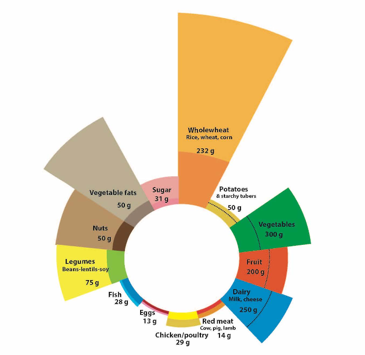
Image.1 the new diet (as proposed by Willis et al., 2019, Lancet
1. De StadsAkker
This is a small-scale area where the owners grow local crops and farm in an organic, circular way. The main point of entry for this area is to design the new diet according the Lancet research and the types of food needed translated to the Dutch context. The task is to close the cycles of nutrients, water and energy, and try to capture carbon and nitrate. Further to this, the question is whether we can grow enough food for consumption during summer and, fermented, for the winter period for a family of 4.
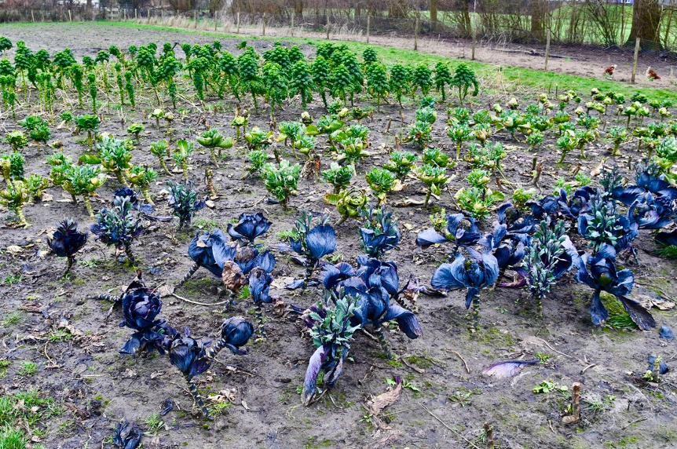
Image.2 the organic farmland, De StadsAkker
The radical questions for StadsAkker are twofold. Firstly, the task is to design a garden without the use of any fossil resources. Besides producing food, could De StadsAkker become an energy farm as well, and if so, how? Secondly, the question is how to grow food at De StadsAkker in completely new climate conditions. Imagine a climate that has similarities with a Sahara-climate where prolonged periods of drought are intermitted by torrential rain. How and which crops can be grown?
The main results of this design exercise firstly focused on understanding the nutritional, energy and water flows in the area under the new climate circumstances (Image. 3). The team sought the benefits to make the connections and coherence between the components visible.
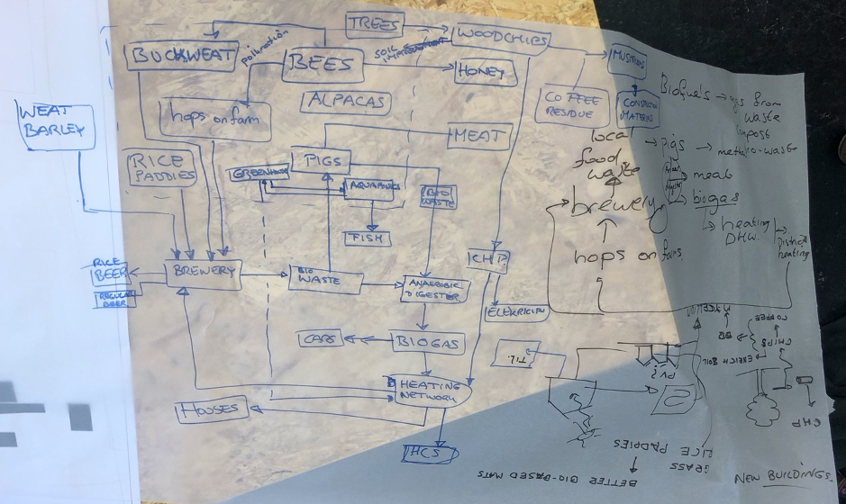
Image.3 understanding the nutritional, energy and water flows in the area under the new climate circumstances.
This FEW-flow diagram was then turned into a design in which the flows were made productive and could adhere to future climate. A combination of a local brewery with connection saline and fresh water in greenhouses could not only produce food, but when extended to the entire northern zone of the city of Groningen will also play a significant role in dealing with sea level rise and coastal protection (image.4).
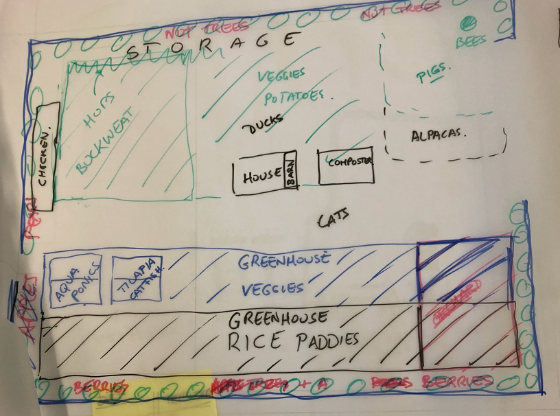
Image.4 a design in which the nutritional flows were made productive and could adhere to future climate.
2. ZernikeCampus
The second site is the ZernikeCampus. This university precinct consists mainly of university buildings, a robust water and green system and sporting facilities. On a daily basis approximately 35,000 users spend up to eight hours on campus. Taking the new diet as the point of departure of thinking, the ambition for this precinct is to design a local food-system that could provide the food for all its users throughout the year. The radical questions for ZernikeCampus are twofold. Firstly, the design question is how to create a precinct that could use less than nothing, and become a net producer of materials, food, energy and water. This way the campus should develop in a reciprocal way and become more than circular. The second hypothetical is how a productive system on campus could maximize the value proposition, both in a monetary as well as social or environmental sense.
The design for a productive campus that maximizes the value proposed different productive sheds: a PV-area on sporting fields, freshwater aquaponics, walnut-orchards, cricket farming, vine-facades for wine production, roof-hydroponics, coffee-grind mushroom growth, tomato-greenhouses on top of the parking areas, and carrots planted in between the buildings, altogether could create a revenue of approximately 10 million euro (Image.5).
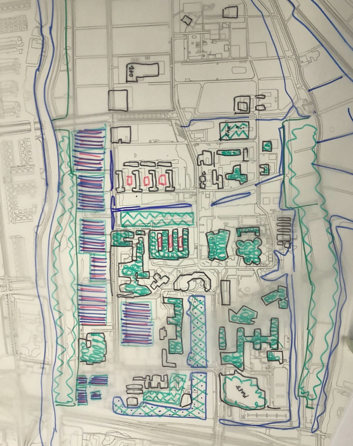
Image.5 a design for a productive campus that maximizes the value proposed different productive sheds.
Using less than nothing, e.g. delivering more than the demand, was elaborated for the paper used on campus. Every person uses 1800 sheets of paper per year and based on an estimation 2/3 of all paper can be recycled five times, each year 1/3 of fresh paper need to be brought in the system. When a natural forest is planted in a rotation cycle delivering mature trees in 10 years, the total area needed to produce the required amount of paper is 4ha. The revenue is very modest at 35.000 euros, but its carbon sequestration is significant.
Measuring the FEW-print of the ZernikeCampus design shows that, compared with an average site, it scores significantly better (Image.6). Especially the impact of energy use contributes to this outcome. The application of the FEW-print has been undertaken in a fast, accurate but simplified way to make it useful in the design process.
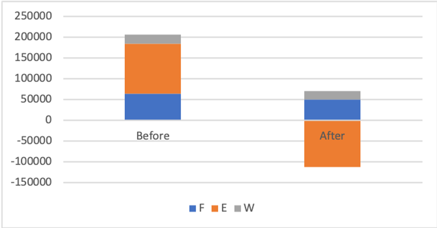
Image.6 A simple measurement of the FEW-print of the ZernikeCampus design
3. ReitdiepValley
The area to the north of the City of Groningen is shaped by the natural landscape of the Wadden Sea and the Reitdiep river (Image.7). It is a relatively large-scale area, ranging from the city of Groningen up to the island of Schiermonnikoog in the Wadden Sea.
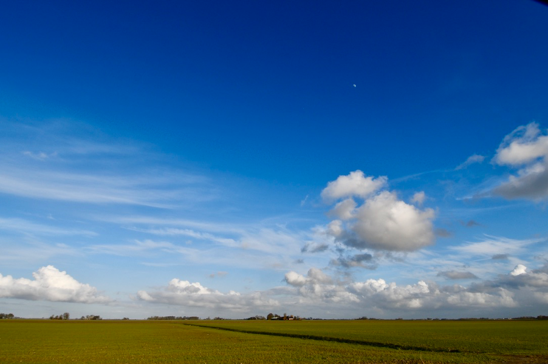
Image.7 the natural landscape of the Wadden Sea
For this area the major questions discussed during the workshop are:
- How can we design a landscape that is able to deal with three meters sea level rise?
- How can we design a system that modifies, treats or uses the accelerating inland salinity due to the strong seepage from the Wadden Sea?
- How can sufficient water storage capacity be designed as part of the landscape?
- How can effluent water from urban and agricultural activities be purified?
- How can we generate renewable energy for 100.000 people?
- How can we design a food system producing all the food for 100.000 people (according the new diet)?
- How can we close the cycles of water flows, energy flows, nutrient-flows, nitrate and carbon?
NewFoodNexus
The design of the NewFoodNexus starts from the point of growing the food for all inhabitants of one segment from the city to the coast, and an additional 1/5 of the Groningen city population. Calculating the required area, a regular diet would need 105sqkm, and this would not fit in the space available. However, when the new diet is taken as the input for the design only 36sqkm is sufficient. The setup of the farming system is chosen according Von Thünens model, with the most freshly produced products closest to the city. In this case mushroom production, crickets, tomatoes eggs and chicken, and fish are produced near Groningen. At a certain distance dairy and red meat are located and orchards, crops like potatoes and carrots are placed near the coast. As a whole the concept of the new diet does not need the total amount of space available, the surplus being used for recreation and nature.
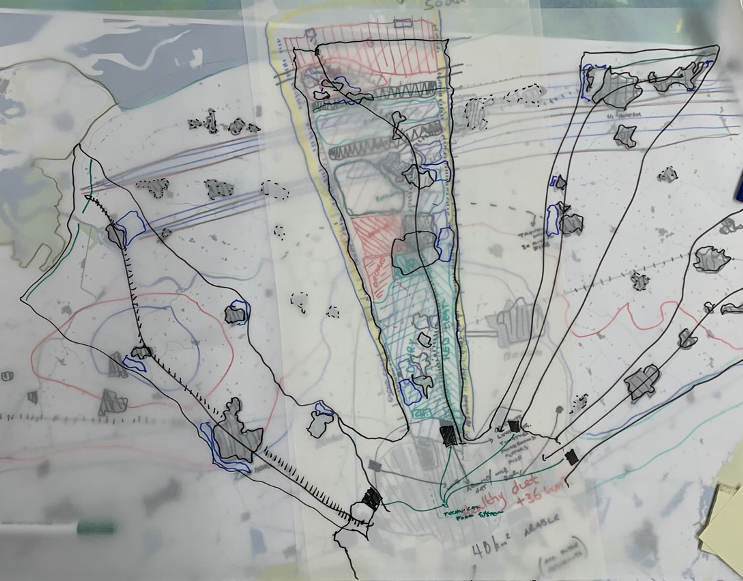
Image.8 The design of the NewFoodNexus
PeatSaline
The PeatSaline proposition took an accelerated sea level rise of minimum three meters as the point of departure. The tradition in the Netherlands has long been to protect the land by raising dikes (Image.9). Up to 1,5 meters of sea level rise can be dealt with, but when sea level rises more and faster this increasingly becomes more impossible. There is a well-researched solution to this to make use of the land-forming power of the sea. It appears that the sea can cope with a rising water level in a natural way, by sedimenting clay and sand at a pace the ground level is rising with the same pace as the water rises. The key intervention to allow this process happening is to deconstruct the engineered dikes and dams that prohibit nature from building an emerging landscape. Allowing the sea to enter the landscape again will form new land in sequential stages. Simultaneously, the landforming will start building up new land in the Wadden Sea, eventually up to the Schiermonnikoog island. A ‘Land van Saeftinghe’ sort of fast growth of land will occur with new creeks determining the natural land and water boundaries. The system will form eventually new barrier islands outside the current islands.
At the same time fresh water has to be stored and slowly discharged from the inland higher grounds. In the highest parts of the landscape, where clean and fresh rainwater is stored new peat forming will take place and discharge the water in a slow pace to the north. These peat areas will continue to grow over time, until they eventually meet the salty marshes. These two systems will, over time, merge. The team foresees a staged emergence in which the first phase represents separation between land and water. In a second stage the salt marshland development joins the freshwater system, linking in so-called synapses. The ultimate phase is a deep intrusion of the saltwater landscape in the freshwater system and vice versa.
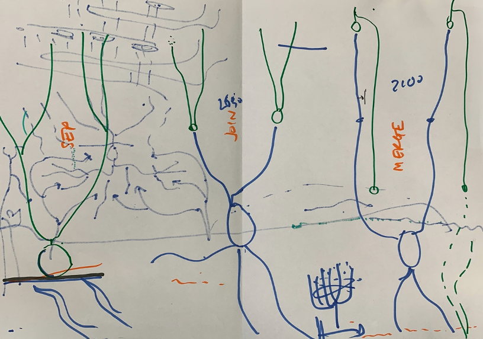
Image.9 the PeatSaline proposition.
The following principles have been used designing this sea level adaptive land: barrier islands, creek intrusion, terra forming (allowing the sea water in , but slowing it down on the wat back at ebb tide), Dutch mangrove forests alongside the creeks to slow down the water even more, ride not crash prevention of flooding houses and villages in the landscape during occasional heavy flooding, synaptic synergies where salt and fresh water meet (and could form the basis for blue energy), and finally the sponge operation of the peat landscape.
This plan proposes a transformational change to make the landscape more resilient, and at the same time becoming capable of staying and continue living in a land under threat of flooding as a result of accelerated sea level rise. It is also better capable of dealing with torrential rain as can be expected in the new climate by introducing peat areas that store the water. This transformation is foreseen in three stages (see image.10).
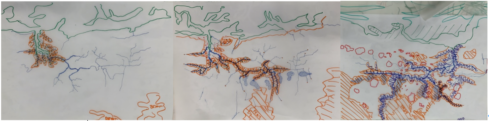
Image.10 three stages of landscape forming, 2030-2050-2100
Learnings and findings
This M-Nex workshop in Groningen has brought the following findings and learnings to the team:
- The team elaborated on the design methodology, defining three phases in FEW-design and linking assessment as an integrated part to this. The three phases are exploration, iteration and communication.
- The team has added a specific Research by Design step in the design process. These radical what-if questions lead to extreme design propositions derived through long-term singular thinking, then analyzing the impact of these design propositions.
- As the PeatSaline illustrates dealing with rapid change, such as accelerated sea level rise is most chanceful through nature-based design.
- The preliminary FEW-print calculations for the ZernikeCampus and NewFoodNexus plans show the new diet would have a significant lower FEW-print than a regular diet would have.
- A design for the food-energy-water NEXUS needs an assessment tool that is able to respond instantly to questions deriving from the design team, a fast use of the FEWprint is essential. We need to realize that we never can be detailed enough, so we need to acknowledge the knows, as accurately as possible but also respecting the non-knowns when it comes to the FEWimpact of a certain design proposition. These can be further investigated, but might not be delivered instantly.
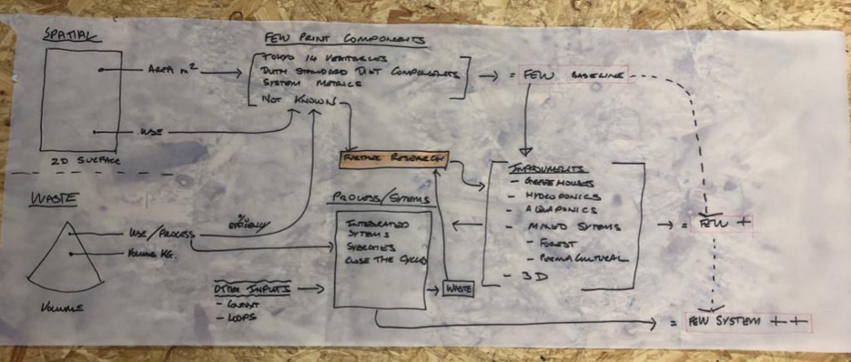
Image.11 Research by Design step in the design process

Image.12 The Forum for FEW Design team in Groningen